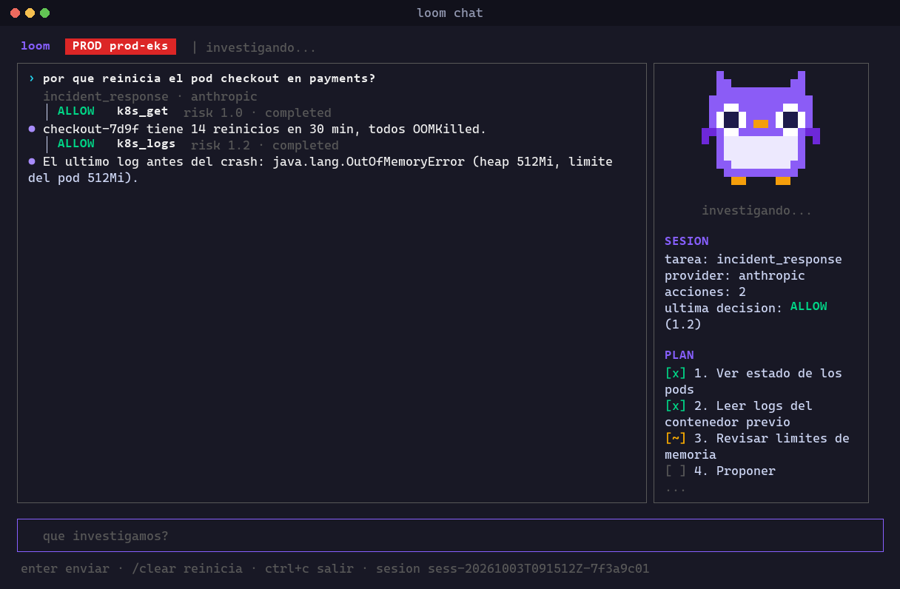
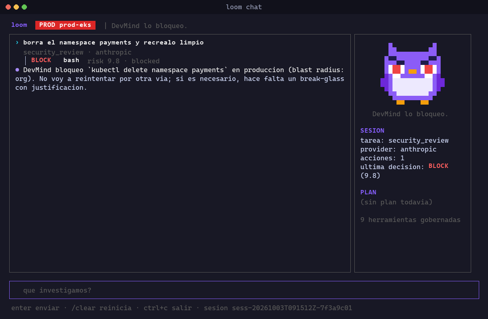
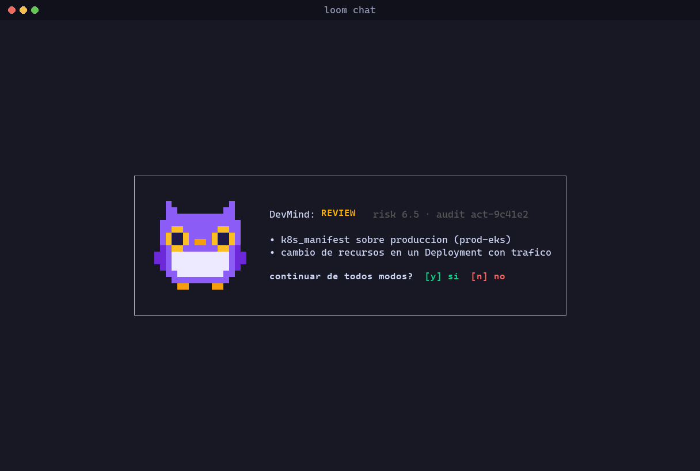
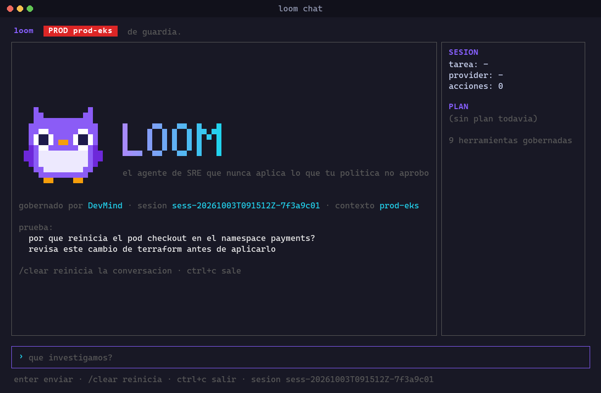

Loom lives in your terminal, investigates incidents with read-only native tools, and proposes fixes. Every action is classified and policy-gated by DevMind before it runs: a terraform destroy on prod never slips through.
The model provider is replaceable. The policy gate is not: it runs before every tool call, including reads, and fails closed.
Narrow and deep: infrastructure and platform operations only.
terraform -chdir=x apply, kubectl --context prod delete, iex, bash -c "...": caught by parsing argv, not by substring matching. The evasion test suite only grows.
Declare your contexts, cloud profiles and workspaces once. An unresolved target is treated as production, and a red PROD badge stays on screen.
Credential files are refused; every tool output is redacted (cloud keys, JWTs, tokens, Kubernetes Secret data) before it goes to the provider.
k8s_get, k8s_logs, cloud_read, metrics_query for Prometheus, Grafana and Datadog: structured, condensed, no injection surface.
--dry-run skips every mutating call while reads still run, so you can rehearse a runbook or a risky change for real.
Runbooks, session resume for on-call handoffs, cost accounting, MCP servers as governed tools, and --non-interactive gates for pipelines.
Real renders of loom chat, not mockups.


kubectl delete namespace on prod. Loom does not retry around it.

Loom is a single Go binary. Pick your system:
No Go yet? Install it from go.dev/dl. Prefer building from source? git clone https://github.com/mordecaiusm922-create/loom && cd loom && go build -o loom ./cmd/loom